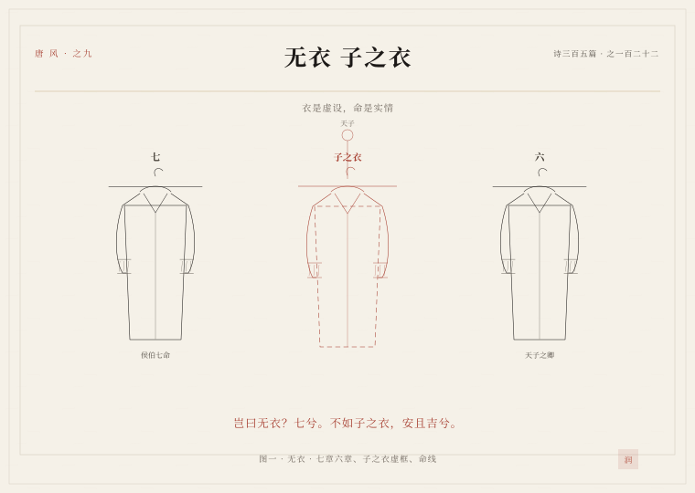
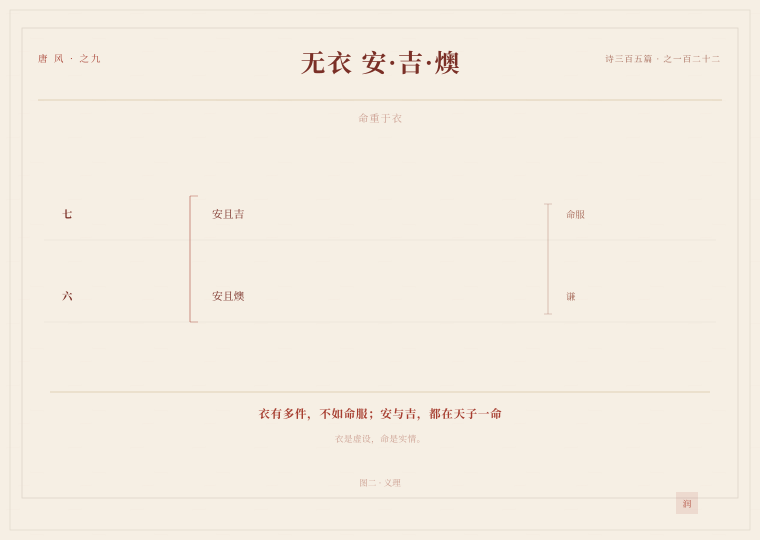

第一百二十二篇 无衣
唐风 · 之九 SJ122
朗读 · 普通话
依经文原文朗读，章次不读出；配古琴底乐，不改速、不加拖腔。全库同一音色（豆包 TTS），非播音员录制。
一 解题
诗三判：
- 谁在说：晋国大夫（武公之臣）。对着天子之使请命：我岂无七章之衣？只是不如天子所赐之命服，得之则安且吉。
- 说什么事：二章只换七/六、吉/燠。七，侯伯七命、冕服七章；六，天子之卿六命；变七言六，是谦辞。
- 为何编在此：唐风之九。121 民苦于役，122
大夫急于请命；一在下困，一在上求，皆晋室之乱世。
《毛序》：“《无衣》，刺晋武公也。武公始并晋国，其大夫为之请命乎天子之使，而作是诗也。”（后世传本“刺”或作“美”，见存疑。）
朱子《诗集传》：“赋也。侯伯七命，其车旗衣服皆以七为节。子，天子也。……天子之卿六命。变七言六者，谦也。……燠，暖也。”
本库的看法：《无衣》是一首请命之辞。
诸侯不命于天子则不成为君；武公以孽夺宗，心未自安，故大夫就天子之使请命服。诗说“岂曰无衣”，不是真无衣——晋旧有七章之服；所求者，天子之命。衣是礼的凭信，不是御寒之物。
断语：衣有多件，不如命服；安与吉，都在天子一命。
先辨五事：“七/六”是命数与章数（七命七章、六命六章），不是七件六件衣服；“子”指天子，不是“你”的泛称；“吉”是善、美，不是吉凶；“燠”是暖，不是“奥深”；此篇与秦风《无衣》（岂曰无衣，与子同袍）同名异篇：彼为同仇共袍，此为请命求服。
二 经文
第一章
岂曰无衣？七兮。
不如子之衣，安且吉兮。
第二章
岂曰无衣？六兮。
不如子之衣，安且燠兮。
分章：二章，章三句。
三 韵读
- 一章：衣、吉，微质通押；“吉”收，得命则善。
- 二章：六、燠，觉部；“衣”不韵；“燠”收，得服则暖、可以久。
- 朱子无叶音改读；“兮”为语助，不入韵。
读法：二章由吉到燠，一曰善美，一曰可久；所重皆不在衣。
四 字义与名物
- 七：侯伯七命，冕服七章，以七为节。六：天子之卿六命，车旗、衣服以六为节。
- 子：天子（指天子之使所奉之王命）。安：心安。吉：善、美。燠：暖，言可以久。
- 岂曰无衣：反诘，我非无此章之衣。
名物：
- 命服：天子赐诸侯之冕服，与命数相应；侯伯七章，卿六章。
- 章：服上绘绣之文章（日月、山龙、华虫之类），命数即章数。
五 今译
岂能说我没有衣裳？七章之服有过。只是不如天子所赐之衣，既安妥又美好。
岂能说我没有衣裳？六章之服有过。只是不如天子所赐之衣，既安妥又暖久。
六 章旨
- 一章：写“七”与“吉”。七章非无，所羡在王命；得命则安且吉。
- 二章：写“六”与“燠”。降六为谦，所求仍在命服；得服则安且燠。
- 总收：两章只换命数与安辞；衣是虚设，命是实情。
七 诗教
- 赋：直陈请命之辞；赋到“不如子之衣”，所请在衣之外。
- 观：观世乱之后，名分待王命而立；赂宠得封，礼纲已坠。
- 群：大夫为君请命，臣为君谋；一片请命之辞，见君臣相倚于未安。
- 怨：诗若美辞，朱子已辨其倨慢无礼；刺在请命本身，不在衣。
八 分寸与边界
- 不可与秦风《无衣》混。彼“与子同袍”是同仇赴战，此“子之衣”是天子命服；同名同起句，情志全反。
- 不可把“七兮／六兮”解作七件、六件衣服。它是命数章数；一读件数，请命之礼全失。
- 不可把“子”当泛称的你。子指天子；一读通称，所请之对象落空。
- 不可把“安且吉／燠”读作穿衣保暖的家常话。安为得命心安，吉为善美，燠为可久；一读御寒，礼意成俗情。
- 不可把此诗读作美武公强盛。毛序作“刺”，朱子亦言其倨慢无礼、王纲不振；一读美颂，篡夺之非不见。
九 存疑
- 序辞异文：毛诗正义本作“刺晋武公也”，后世传本多作“美晋武公也”；美刺之辨，存疑不硬断。
- 诗旨：毛、郑以为大夫请命之辞；朱子述请命之意，而归咎于武公赂王、周室不振。本库从“请命”读，以刺为骨。
- “七／六”：毛传以命数章数解；一说七、六为衣之节次。从命数，与《周礼·典命》合。
- “子”：郑笺指天子；一说“子”为天子之使。所奉者王命，故称天子。
- 背景年世：《史记·晋世家》武公灭晋、赂周釐王受命，在庄十六年前后；诗之作世，序传与史文小有出入。存其世，不强系。
十 跨典
- 《左传·庄公十六年》：“王使虢公命曲沃伯为晋侯。”——请命得命之事；此诗即大夫请命之辞。
- 《礼记·曲礼下》：诸侯之德，必称天子。——无命不成君；“不如子之衣”正此义。
- 《周礼·春官·典命》：“侯伯七命，其国家、宫室、车旗、衣服、礼仪皆以七为节。”——七、六之制本此。
- 《诗经·秦风·无衣》：“岂曰无衣？与子同袍。”——同名异篇；彼同仇，此请命。
- 《诗经·唐风·鸨羽》（121）：“王事靡盬。”——一苦一求，同卷之世乱相照。
十一 双卡与图
双卡八对：
| 七（七命七章） |
七（七件衣） |
| 六（六命六章） |
六（六件衣） |
| 子（天子） |
子（你泛称） |
| 吉（善美） |
吉（吉凶） |
| 燠（暖、可久） |
燠（奥深） |
| 命服（王所赐） |
命服（自家衣） |
| 安（得命心安） |
安（平安泛称） |
| 请命（大夫之辞） |
请命（请求泛称） |

图一 · 无衣 七章六章、子之衣

图二 · 无衣 安·吉·燠：命重于衣
读图三处：
- 衣：图一左右两袭衣轮廓，左标“七”、右标“六”，中悬一袭“子之衣”虚框；不画织纹。衣是礼器，画成锦绣即成服饰图。
- 命线：图一天子方位一线下贯子之衣；线即命，不在衣面。
- 安吉燠在图二：两行“七—吉”“六—燠”，右收“命服”；末格朱线，断语压底。